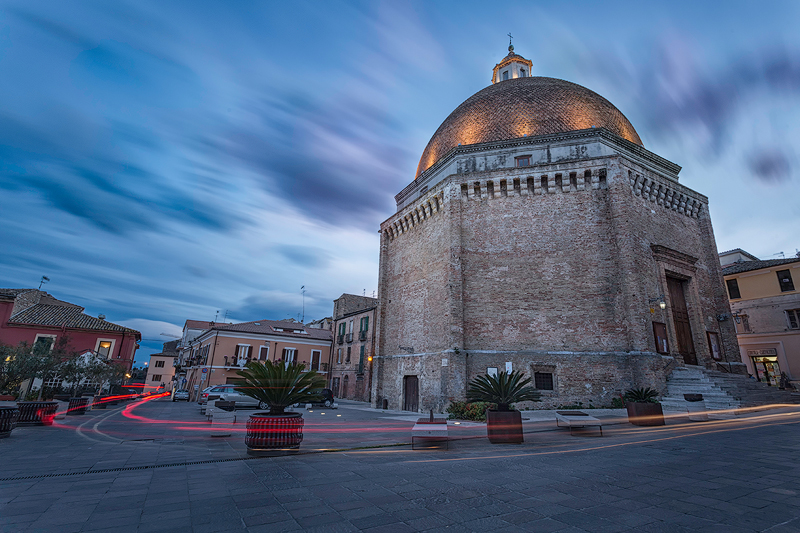

San Flaviano Cathedral
The Church of St. Flavianus in Giulianova, erected between 1472 and 1500, is dedicated to the Holy Patriarch of Constantinople, whose relics arrived in the city in 1004, possibly following a shipwreck. Initially named for St. Mary, it was later dedicated to St. Flavian after the transfer of his relics in 1478. The church, with an octagonal plan and a hemispherical dome, is a rare example of Renaissance architecture in Abruzzo.
The structure's imposing height makes it a visible landmark for the surrounding area. Originally decorated with blue glazed tiles, the church houses a crypt with a ceiling considered an engineering masterpiece, where the saint's relics were kept.
Today, the church holds contemporary works of art, including sculptures by Venanzo Crocetti and Francesco Coccia. In addition, an exterior plaque commemorates the fallen of World War I, topped by a bronze eagle by Ulderico Ulizio.